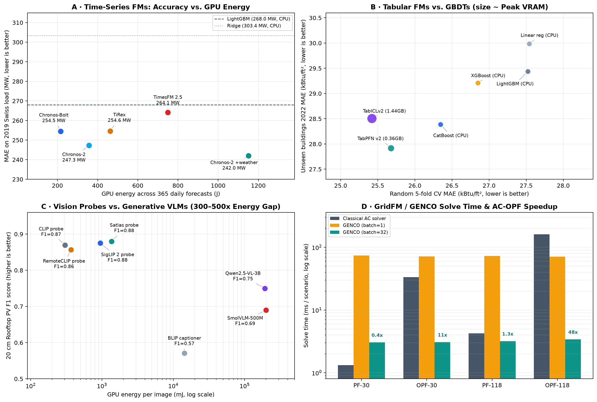

Auto-generated from benchmarks/results/*.json
Cross-Module Energy & Operational Benchmark Hub
Every table and Pareto plot on this page is generated directly by scripts/build_benchmark_summary.py from executed
notebook telemetry (8 notebooks, 28 unique model entries, 35 logged cards,
and 23.95 Wh total measured GPU electricity).
- Workstation
- Quadro RTX 6000 (25.8 GB VRAM, SM 7.5)
- Stack
- Python 3.11.18 · PyTorch 2.11.0+cu128
- Telemetry
- NVML 50 ms GPU energy + CodeCarbon offline system model
- Grand total
- 23.95 Wh GPU · 89.95 Wh whole-system across 8 notebooks
Cross-module accuracy vs. energy & latency Pareto frontiers

Unified model cards & hardware requirements
| Module | Model | Family | Params | Precision | Disk (MB) | Peak VRAM (GB) | Min Hardware | Licence | Hard Limits |
|---|---|---|---|---|---|---|---|---|---|
| 1 · Time series | Chronos-Bolt (base) | T5 encoder-decoder | 205.29 M | float32 | 821.2 | 4.92 | GPU <= 8 GB | Apache-2.0 | Context <= 2,048 steps, univariate only |
| 1 · Time series | Chronos-2 | Time-series Transformer | 119.48 M | float32 | 477.9 | 2.31 | GPU <= 4 GB | Apache-2.0 | Supports past & known-future covariates |
| 1 · Time series | Ridge (+ weather & lags) | Linear + lags | – | cpu/sklearn | – | – | CPU-ok | BSD-3-Clause | Needs historical training split |
| 1 · Time series | LightGBM (+ weather & lags) | Gradient-boosted trees | – | cpu/sklearn | – | – | CPU-ok | MIT | Needs historical training split |
| 1 · Time series | TimesFM 2.5 (200M) | Decoder-only patch Transformer | 231.29 M | float32 | 925.2 | 2.53 | GPU <= 4 GB | Apache-2.0 | Univariate core; covariates via xreg |
| 1 · Time series | TiRex | xLSTM (recurrent FM) | 35.29 M | float32 | 141.2 | 0.30 | GPU <= 4 GB | NX-AI Community / Apache-2.0 (check card) | Univariate, 9 deciles (0.1..0.9) |
| 2 · Tabular | Linear regression | OLS linear model | – | cpu/sklearn | – | 0.00 | CPU-ok | BSD-3-Clause | Linear relationships only |
| 2 · Tabular | Random forest | Tree ensemble (300 trees) | – | cpu/sklearn | – | 0.00 | CPU-ok | BSD-3-Clause | CPU multi-core |
| 2 · Tabular | Gradient boosting | Histogram GBDT | – | cpu/sklearn | – | 0.00 | CPU-ok | BSD-3-Clause | Needs >= 20 samples/leaf by default |
| 2 · Tabular | TabPFN v2 | In-context Transformer | 11.08 M | float32 | 44.4 | 0.24 | GPU <= 4 GB | Prior Labs License (Apache 2.0 w/ attribution) | <= 10,000 rows, <= 500 cols |
| 2 · Tabular | LightGBM | Leaf-wise GBDT | – | cpu/sklearn | – | 0.01 | CPU-ok | MIT | Needs tuning for tiny n |
| 2 · Tabular | CatBoost | Symmetric GBDT | – | cpu/sklearn | – | 0.01 | CPU-ok | Apache-2.0 | Fast inference |
| 2 · Tabular | XGBoost | Depth-wise GBDT | – | cpu/sklearn | – | 0.01 | CPU-ok | Apache-2.0 | Needs tuning for tiny n |
| 2 · Tabular | TabICLv2 | 2-stage Column+Row ICL | 28.54 M | float32 | 114.3 | 2.71 | GPU <= 4 GB | BSD-3-Clause | Scales >100k rows, native quantiles |
| 3 · Multimodal | Load autoencoder (tiny) | 2-layer MLP autoencoder | 890 | float32 | – | 0.02 | CPU-ok | MIT | 24-h shape only |
| 3 · Multimodal | CLIP ViT-B/32 | Dual-encoder ViT + Transformer | 151.28 M | float32 | 1214.0 | 1.41 | GPU <= 4 GB | MIT | 77 text tokens, 224x224 px crop |
| 3 · Multimodal | BLIP captioning base | ViT encoder + Transformer text decoder | 223.97 M | float32 | 1980.5 | 1.42 | GPU <= 4 GB | BSD-3-Clause | Everyday-photo domain, 384x384 px |
| 3 · Multimodal | SigLIP 2 Base (16/224) | Sigmoid-loss ViT-B/16 | 375.19 M | float32 | 1535.2 | 2.52 | GPU <= 4 GB | Apache-2.0 | 224x224 px, 64 text tokens (lowercase recommended) |
| 3 · Multimodal | RemoteCLIP ViT-B/32 | RS-adapted CLIP ViT-B/32 | 151.28 M | float32 | 605.2 | 0.94 | GPU <= 4 GB | Unspecified on HF card | 224x224 px, 77 text tokens; tuned for remote sensing |
| 3 · Multimodal | SatlasPretrain Swin-V2-B | Sentinel-2 RGB EO backbone | 86.91 M | float32 | 352.7 | 1.63 | GPU <= 4 GB | Apache-2.0 | Vision-only (no text encoder); expects [0,1] Sentinel-2 RGB |
| 3 · Multimodal | SmolVLM-500M-Instruct | Idefics3 VLM (fp16) | 507.48 M | float16 | 1019.9 | 1.50 | GPU <= 4 GB | Apache-2.0 | Compact 500M VLM; struggles with strict JSON & dense numbers |
| 3 · Multimodal | Qwen2.5-VL-3B-Instruct | Qwen2.5-VL (fp16) | 3754.62 M | float16 | 7520.9 | 7.72 | GPU 16-24 GB | Apache-2.0 | 7.7 GB VRAM in fp16; dynamic native image resolution |
| 3 · Multimodal | SigLIP 2 Base | Sigmoid ViT-B/16 | 375.19 M | float32 | 1535.2 | 2.01 | GPU <= 4 GB | Apache-2.0 | – |
| 3 · Multimodal | TabPFN v2 (fusion CV) | In-context Transformer | 11.08 M | float32 | 44.4 | – | GPU <= 4 GB | Prior Labs (Apache 2.0) | – |
| 4 · GridFM | GENCO Base (PF · 30-bus) | GNS_heterogeneous (12L, 8H) | 20.07 M | float32 | 80.5 | 0.13 | GPU <= 4 GB | Apache-2.0 | Fixed bus/branch schema per case; OPF bounds Vm & Pg only (soft Qg/thermal/PBE) |
| 4 · GridFM | GENCO Base (OPF · 30-bus) | GNS_heterogeneous (12L, 8H) | 20.07 M | float32 | 80.4 | 0.13 | GPU <= 4 GB | Apache-2.0 | Fixed bus/branch schema per case; OPF bounds Vm & Pg only (soft Qg/thermal/PBE) |
| 4 · GridFM | GENCO Base (PF · 118-bus) | GNS_heterogeneous (12L, 8H) | 20.07 M | float32 | 80.5 | 0.27 | GPU <= 4 GB | Apache-2.0 | Fixed bus/branch schema per case; OPF bounds Vm & Pg only (soft Qg/thermal/PBE) |
| 4 · GridFM | GENCO Base (OPF · 118-bus) | GNS_heterogeneous (12L, 8H) | 20.07 M | float32 | 80.4 | 0.27 | GPU <= 4 GB | Apache-2.0 | Fixed bus/branch schema per case; OPF bounds Vm & Pg only (soft Qg/thermal/PBE) |
1 · Time-series foundation models (Swiss Load & German Solar PV, 2019)
| Task | Model | MAE (MW) | MAPE / nMAE | Peak / Day MAE | Ramp MAE | CRPS (MW) | Imbalance (kEUR) | GPU J |
|---|---|---|---|---|---|---|---|---|
| Load | Last week | 401.9 | 6.36% | 328.1 | 168.4 | – | 209,888 | – |
| Load | Ridge (+ weather & lags) | 303.4 | 4.81% | 262.7 | 143.2 | – | 152,685 | – |
| Load | LightGBM (+ weather & lags) | 268.0 | 4.29% | 179.3 | 140.7 | 183.8 | 132,280 | – |
| Load | Chronos-Bolt (base) | 254.5 | 4.00% | 171.9 | 131.2 | 165.4 | 136,784 | 216.3 |
| Load | Chronos-2 | 247.3 | 3.88% | 185.7 | 125.7 | 159.6 | 132,837 | 356.6 |
| Load | Chronos-2 + weather | 242.0 | 3.82% | 170.5 | 126.7 | 157.2 | 127,206 | 1150.7 |
| Load | TimesFM 2.5 | 264.1 | 4.15% | 191.8 | 134.6 | 170.6 | 138,223 | 749.9 |
| Load | TiRex | 254.6 | 4.01% | 198.4 | 129.0 | 164.0 | 136,100 | 462.7 |
| Solar | Last week | 1694.0 | 35.40% | 3332.8 | 576.6 | – | 892,607 | – |
| Solar | Ridge (+ weather & lags) | 781.6 | 16.34% | 1423.9 | 457.7 | – | 416,796 | – |
| Solar | LightGBM (+ weather & lags) | 681.1 | 14.24% | 1339.1 | 407.5 | 477.6 | 412,699 | – |
| Solar | Chronos-Bolt (base) | 1061.6 | 22.19% | 2037.6 | 386.3 | 680.2 | 541,320 | 225.0 |
| Solar | Chronos-2 | 1085.0 | 22.68% | 2051.2 | 390.6 | 693.0 | 547,497 | 394.7 |
| Solar | Chronos-2 + weather | 545.5 | 11.40% | 1003.9 | 264.3 | 341.6 | 270,333 | 1165.6 |
| Solar | TimesFM 2.5 | 1318.6 | 27.56% | 2523.6 | 475.9 | 831.8 | 692,721 | 790.8 |
| Solar | TiRex | 1091.5 | 22.81% | 2134.7 | 394.7 | 701.4 | 587,737 | 472.4 |
2 · Tabular FMs vs. GBDTs across validation splits (Chicago 2021–2022)
| Model | CV MAE | CV R² | Temporal Repeat MAE | Temporal Unseen MAE | Spatial Holdout MAE | Stock Bias | VRAM (GB) |
|---|---|---|---|---|---|---|---|
| Linear regression | 27.54 | 0.251 | 26.44 | 29.99 | 28.97 | +0.19% | 0.00 |
| LightGBM | 27.52 | 0.262 | 19.06 | 29.44 | 28.61 | +0.64% | 0.00 |
| CatBoost | 26.34 | 0.295 | 21.53 | 28.39 | 27.24 | +2.17% | 0.00 |
| XGBoost | 26.85 | 0.270 | 19.67 | 29.21 | 27.29 | +1.58% | 0.00 |
| TabPFN v2 | 25.68 | 0.319 | 23.01 | 27.92 | 26.73 | -0.72% | 0.36 |
| TabICLv2 | 25.42 | 0.295 | 22.95 | 28.51 | 26.68 | -5.94% | 1.44 |
3 · Geospatial encoders, local VLMs & aerial–tabular fusion
3a · Geospatial & remote-sensing encoders (EuroSAT 5,400 + IGN 20 cm PV)
| Backbone | EuroSAT ZS | EuroSAT Probe | Few-Shot (5 / 50 cls) | Res F1 | Ind F1 | PV Val AUC | PV Val F1 | mJ / img |
|---|---|---|---|---|---|---|---|---|
| CLIP ViT-B/32 | 46.3% | 87.5% | 63.9% / 82.6% | 0.927 | 0.939 | 0.949 | 0.870 | 303.1 |
| SigLIP 2 Base (16/224) | 46.1% | 89.3% | 70.6% / 84.8% | 0.921 | 0.943 | 0.962 | 0.875 | 949.8 |
| RemoteCLIP ViT-B/32 | 32.9% | 92.8% | 78.3% / 89.3% | 0.974 | 0.983 | 0.918 | 0.857 | 367.8 |
| SatlasPretrain Swin-V2-B | – | 97.1% | 87.7% / 94.4% | 0.982 | 0.979 | 0.941 | 0.880 | 1362.3 |
3b · Local VLM structured extraction & hallucination audit
| VLM | A1 PV Acc | A1 PV F1 | Bare-Roof FP | A2 JSON Valid | A2 EPC Exact | A2 Miss/Halluc | s / roof | J / roof | card | VRAM (GB) |
|---|---|---|---|---|---|---|---|---|---|
| BLIP captioning base | 70.0% | 0.571 | 0.0% | 0.0% | 0.0% | 100.0% | 0.21 s | 14.3 / 12.2 | 0.97 |
| SmolVLM-500M-Instruct | 55.0% | 0.690 | 90.0% | 91.7% | 76.7% | 23.3% | 2.05 s | 198.9 / 289.8 | 1.50 |
| Qwen2.5-VL-3B-Instruct | 80.0% | 0.750 | 0.0% | 100.0% | 100.0% | 0.0% | 1.50 s | 192.8 / 474.2 | 7.72 |
3c · Aerial + tabular multimodal fusion (600 Chicago buildings, 5-fold CV)
| Modality | Regressor | MAE (kBtu/ft²) | R² | Stock Bias |
|---|---|---|---|---|
| Tabular only | Ridge | 28.86 | 0.051 | +1.65% |
| Tabular only | LightGBM | 29.83 | 0.081 | -0.30% |
| Tabular only | TabPFN v2 | 26.96 | 0.182 | +4.01% |
| Aerial only (SigLIP 2) | Ridge | 29.88 | 0.017 | +6.21% |
| Aerial only (SigLIP 2) | LightGBM | 32.52 | -0.073 | +9.40% |
| Aerial only (SigLIP 2) | TabPFN v2 | 29.41 | 0.012 | +4.12% |
| Aerial only (RemoteCLIP) | Ridge | 30.44 | 0.019 | +5.98% |
| Aerial only (RemoteCLIP) | LightGBM | 33.02 | -0.094 | +7.31% |
| Aerial only (RemoteCLIP) | TabPFN v2 | 29.40 | 0.019 | +3.91% |
| Fused (Tab + SigLIP 2) | Ridge | 28.85 | 0.094 | +3.05% |
| Fused (Tab + SigLIP 2) | LightGBM | 30.27 | 0.039 | +6.42% |
| Fused (Tab + SigLIP 2) | TabPFN v2 | 27.11 | 0.173 | +4.53% |
| Fused (Tab + RemoteCLIP) | Ridge | 28.81 | 0.056 | +0.87% |
| Fused (Tab + RemoteCLIP) | LightGBM | 30.45 | 0.042 | +3.93% |
| Fused (Tab + RemoteCLIP) | TabPFN v2 | 27.22 | 0.182 | +5.38% |
4 · GridFM / GENCO power-grid surrogates (IEEE 30-bus & 118-bus contingencies)
| Benchmark | N test | Vm MAE (pu) | Va MAE | Mean |ΔP| (MW) | GENCO |ΔC| | DC |ΔC| | AC Solver (ms) | GENCO b=32 (Speedup) | mJ / solve |
|---|---|---|---|---|---|---|---|---|---|
| PF · IEEE 30-bus | 404 | 0.0001 | 0.022° | 0.0040 | – | – | 1.32 | 3.04 (0.4×) | 166.4 |
| OPF · IEEE 30-bus | 355 | 0.0018 | 0.028° | 0.0061 | 0.144% | 8.141% | 33.57 | 3.07 (10.9×) | 171.8 |
| PF · IEEE 118-bus | 404 | 0.0001 | 0.285° | 0.0883 | – | – | 4.26 | 3.19 (1.3×) | 359.0 |
| OPF · IEEE 118-bus | 404 | 0.0110 | 1.497° | 1.4738 | 1.537% | 4.812% | 161.76 | 3.40 (47.6×) | 366.9 |
Per-notebook energy & grid carbon rollup (NVML + CodeCarbon)
| Notebook | NVML Time (s) | NVML GPU (Wh) | CC Time (s) | CC System (Wh) | CO₂ CH (mg) | CO₂ EU (mg) | CO₂ US (mg) |
|---|---|---|---|---|---|---|---|
module1_timeseries_01_demand_forecasting | 16.2 | 0.7112 | 34.8 | 2.2669 | 68.0 | 521.4 | 861.4 |
module1_timeseries_02_tsfm_benchmark_energy | 156.6 | 2.6181 | 163.4 | 13.8143 | 414.4 | 3,177.3 | 5,249.4 |
module2_tabular_01_tabular_intro | 93.1 | 1.7128 | 95.6 | 4.2677 | 128.0 | 981.6 | 1,621.7 |
module2_tabular_02_tabular_fms_comparison | 430.9 | 6.2760 | 445.6 | 39.4665 | 1184.0 | 9,077.3 | 14,997.3 |
module3_multimodal_01_encoder_decoder | 44.0 | 0.9620 | 53.9 | 2.1097 | 63.3 | 485.2 | 801.7 |
module3_multimodal_02_geospatial_energy_fms | 91.9 | 4.9153 | 137.6 | 9.2050 | 276.1 | 2,117.2 | 3,497.9 |
module3_multimodal_03_vlm_and_multimodal_fusion | 230.7 | 5.9677 | 285.5 | 14.9507 | 448.5 | 3,438.7 | 5,681.3 |
module4_grid_01_gridfm_genco | 80.1 | 0.7832 | 117.6 | 3.8677 | 116.0 | 889.6 | 1,469.7 |
| All 8 notebooks combined | 1143.6 | 23.9463 | 1334.0 | 89.9485 | 2,698.5 | 20,688.2 | 34,180.4 |